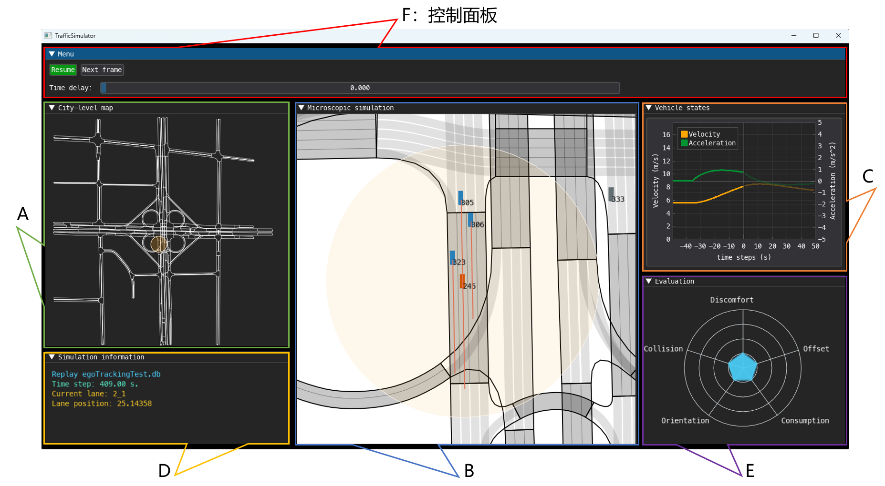

Replay & Interactive Replay
回放是仿真程序的重要功能，可以帮助我们深入分析危险场景和失败场景产生的原因，从而优化相关算法。LimSim 同样提供了回放功能，可以对实时仿真生成的数据进行回放。在此基础上，我们提供了交互式回放功能，帮助算法在关键场景上进行更新迭代。
仿真回放¶
在根目录下，运行下列指令可以调用 LimSim 的回放功能：
界面布局¶
上述指令会调出回放功能的界面，如下图所示:

可以看到，相较于实时仿真，回放的界面多了一个控制面板，该区域可以控制回放的开始与暂停，回放的速度等，方便查看仿真的关键细节。此外在 B 区，我们可以看到车辆前方有粉红色的曲线，该曲线是数据库记录的车辆的未来轨迹，车辆会完全按照粉红色曲线的轨迹行驶，我们将其称为 dbTrajectory；与之对应的，轨迹规划算法提供的紫色曲线被定义为 plannedTrajectory。C 区在显示车辆状态时，在 0 点的右侧，同样是显示数据库中记录的车辆的速度和加速度。
示例分析¶
仿真回放的示例代码很简单，如下所示：
 这里由于不需要与 SUMO 交换数据，所以只需要运行
这里由于不需要与 SUMO 交换数据，所以只需要运行 rmodel.moveStep()即可。
仿真回放的初始化只需要指定数据库，且不需要同外部进行交互，因此该示例的代码相对简单。
交互式回放¶
在自动驾驶测试仿真的过程中，可能会出现部分危险场景和失败场景，这些场景是自动驾驶测试升级的重要数据来源。因此，在危险场景上进行重新测试是很重要的一个功能。然而，如果仅对 Ego 进行重新控制，周围的车辆不对 Ego 的行为做出响应，测试就失去了本身的意义。因此，LimSim 提供了交互式回放的功能，让用户可以在危险场景中迭代算法。

交互式仿真需要为场景中的车辆规划新的轨迹，也就需要处理新旧轨迹之间的冲突。如上图所示，两车按照原始轨迹行驶是没有冲突的，但是当 ego 改变轨迹的时候，就可能与其他车辆发生碰撞。这时，其他车辆需要做出响应来避免碰撞，也就是按照图中紫色的轨迹来行驶。然而，当ego 远离了这个场景，刚才被控制的车辆就面临一个问题——是否回到原轨迹上。如果回到原轨迹上，就会产生位置的突变，可能导致新的冲突，如果不回到原轨迹上，则车辆后续的轨迹就没有了只能停在原地或消失。
LimSim 将上述问题拆成三个子问题来解决：1. 何时为车辆规划新的轨迹；2. 规划轨迹要持续多久；3. 轨迹规划结束后，如何处理这辆车。
第一，为车辆规划新的轨迹并不是越早越好，如果车辆刚生成就为其规划新的轨迹，那对数据的利用程度太低，仅仅用到了车辆生成的位置。因此 LimSim 使用碰撞检测来判断是否需要为车辆规划新的轨迹。如果车辆的原始轨迹与其他车辆的新轨迹冲突（车辆首先要在 AoI 内），则需要为车辆重新规划轨迹，否则就维持原轨迹行驶。
第二，前文提到车辆脱离控制后要么跳回原轨迹，要么停在原地或消失。这两种形式显然都会大大降低仿真的连贯性和有效性。因此 LimSim 会判断脱离控制的车辆是否还在 AoI 内，如果车辆仍在 AoI 内，即使不再冲突，LimSim 依然会继续为其规划轨迹，直到其离开 AoI。这样做主要是为了保证 AoI 内的场景是连贯的，而在 AoI 外的车辆则对 ego 的影响较小。
第三，当车辆不再需要交互，且离开了 AoI，则控制阶段结束。这时如果让车辆回到原轨迹，则可能与其他车辆发生碰撞，因此 LimSim 选择直接销毁这辆车。如果数据集中还有这辆车的剩余轨迹，则会在对应的时刻重新生成这辆车。需要注意的是，LimSim 在生成车辆的时候，都会判断该车是否会与路网中现有的车辆产生冲突，如果不冲突则生成车辆，反之，则延迟到下一个时刻再生成。
碰撞检测
一般的碰撞检测算法会使用分离轴定理判断两个矩形是否相交，这种方法可以判断某个时刻两车是否相撞。但是在仿真中，我们要为车辆留出足够的反应时间。比如 A 车生成时，前方 3 米处有一辆 B 车在行驶，即使这个时刻两车不相撞，未来几秒内两车还是有很大的可能性冲突。因此，LimSim 会使用车辆未来的轨迹（dbTrajectory 或 plannedTrajectory）来进行碰撞检测，以避免潜在的冲突。
仿真示例¶
介绍了实现方法之后，运行下面的指令，可以运行交互式仿真的示例：
如果上述指令运行正常，则同样会调出图形界面。图形界面的整体结构与实时仿真一致，仅在 B 区有些许不同。如下图所示，车辆前面的曲线有粉红色和紫色两种，分别对应前文提及的 dbTrajectory 和 plannedTrajectory。车辆如果按照数据库中的轨迹行驶，则显示 dbTrajectory，如果受到决策规划算法的控制，则显示 plannedTrajectory。

示例代码如下：
from trafficManager.traffic_manager import TrafficManager
from simModel.egoTracking import interReplay
irmodel = interReplay.InterReplayModel(
dataBase='egoTrackingTest.db',
startFrame=4000
)
planner = TrafficManager(irmodel)
while not irmodel.tpEnd:
irmodel.moveStep()
if irmodel.timeStep % 5 == 0:
roadgraph, vehicles = irmodel.exportSce()
if roadgraph:
trajectories = planner.plan(
irmodel.timeStep * 0.1,
roadgraph, vehicles
)
else:
trajectories = {} # (1)
irmodel.setTrajectories(trajectories)
else:
irmodel.setTrajectories({})
irmodel.gui.destroy()
 运行交互式回放时，
运行交互式回放时，irmodel.setTrajectories()函数是必须的，即使没有规划轨迹，也需要传入空的字典。
示例代码整体与实时仿真差别不大，将路网文件和路径文件替换为对应的数据库即可。